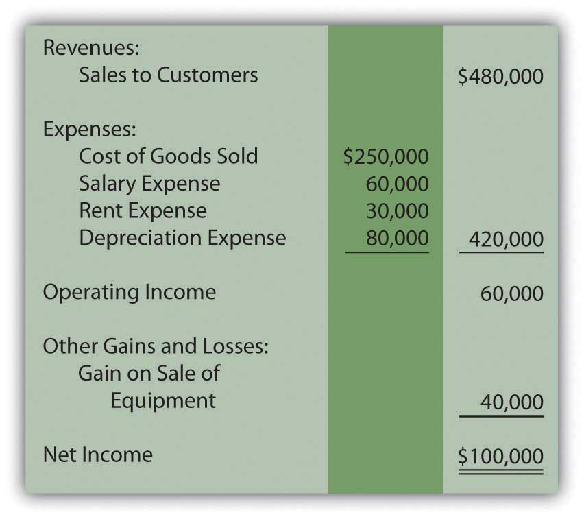
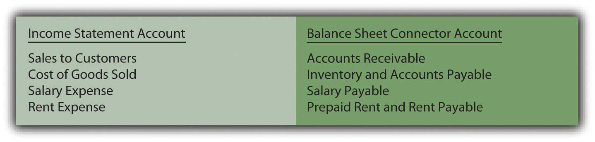
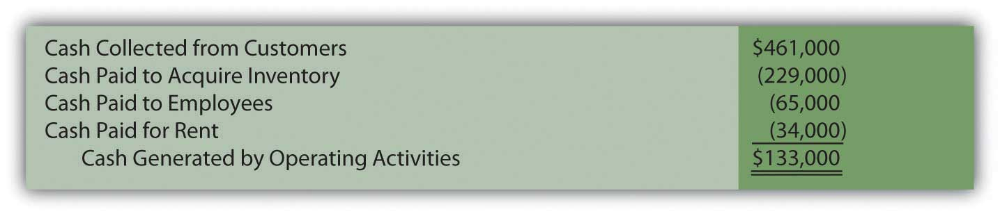

At the end of this section, students should be able to meet the following objectives:
Question: The net cash inflow or outflow generated by operating activities is especially significant information to any person looking at an organization’s financial health and future prospects. According to FASB, that information can be presented within the statement of cash flows by either of two approaches: the direct methodA mechanical method of reporting the amount of cash flows that a company generates from its operating activities; it is preferred by FASB because the information is easier to understand but it is only rarely encountered in practice. or the indirect methodA mechanical method of reporting the amount of cash flows that a company generates from its operating activities; it is allowed by FASB (although the direct method is viewed as superior) but it is used by a vast majority of businesses in the United States.. The numerical amount of the change in cash resulting from the company’s daily operations is not impacted by this reporting choice. The increase or decrease in cash is a fact that will not vary based on the manner of presentation. Both methods arrive at the same total. The informational value to decision makers, though, is potentially affected by the approach selected.
FASB has indicated a preference for the direct method. In contrast, reporting companies (by an extremely wide margin) have continued to use the more traditional indirect method. Thus, both will be demonstrated here. The direct method seems a bit easier to explain and will be discussed first. How is information presented when the direct method is selected to disclose a company’s cash flows from operating activities?
Answer: The direct method starts with the income statement for the period. Then, each of the separate figures is converted into the amount of cash received or spent in carrying on operating activities. “Sales,” for example, is turned into “cash collected from customers.” “Salary expense” and “rent expense” are recomputed as “cash paid to employees” and “cash paid to rent facilities.”
For illustration purposes, assume that that Liberto Company prepared the following income statement for the year ended December 31, Year One. This statement has been kept rather simple so that the conversion to cash flows from operating activities is not unnecessarily complex. For example, income tax expense has been omitted.
Figure 17.4 Liberto Company Income Statement Year Ended December 31, Year One
The $100,000 net income figure reported here by Liberto is based on the application of U.S. GAAP. However, the amount of cash generated by the company’s operating activities might be considerably more or much less than that income figure. It is a different piece of information.
To transform a company’s income statement into its cash flows from operating activities, three distinct steps must be taken. The first step is the complete elimination of any income statement account that does not involve cash. Although such balances are important in arriving at net income, they are not relevant to the cash generated and spent in connection with operations. By far the most obvious example is depreciation. This expense appears on virtually all income statements but has no purpose when cash flows are being determined. It is omitted because depreciation is neither a source nor use of cash. It is an allocation of a historical cost to expense over an asset’s useful life. For Liberto, the $80,000 depreciation expense is removed to begin the process of arriving at cash flows from operating activities.
The second step is the removal of any gains and losses that have resulted from investing or financing activities. Although cash was probably involved, this inflow or outflow is reported elsewhere in the statement of cash flows and not within the company’s operating activities. For example, Liberto’s $40,000 gain on the sale of equipment is germane to the reporting of investing activities, not operating activities. The cash received in this disposal is included on the statement of cash flows but as an investing activity.
Neither noncash items such as depreciation nor nonoperating gains and losses are included when an income statement is converted to the cash flows from operating activities.
Question: After these two balances are deleted, Liberto is left with four income statement accounts:
These balances all relate to operating activities. However, the numbers reflect the application of U.S. GAAP and accrual accounting rather than the amount of cash exchanged. The cash effects must be determined individually for these accounts. How are income statement figures such as sales or rent expense converted into the amount of cash received or expended?
Answer: For all the remaining income statement accounts, a difference usually exists between the time of recognition as specified by accrual accounting and the exchange of cash. A sale is made on Monday (revenue is recognized) but the money is not collected until Friday. An employee performs work on Monday (expense is recognized) but payment is not made until Friday.
These timing differences occur because accrual accounting is required by U.S. GAAP. Thus, many revenues and expenses are not recorded at the same time as the related cash transactions. In the interim, recognition of an asset or liability balance is necessary. Between the sale on Monday and the collection on Friday, the business reports an account receivable. This asset goes up when the sale is made and down when the cash is collected. Between the employee’s work on Monday and the payment on Friday, the business reports a salary payable. This liability goes up when the money is earned and down when the cash payment is made. In this textbook, these interim accounts (such as accounts receivable and salary payable) will be referred to as “connector accounts” because they connect the accrual recording with the cash transaction.
Each income statement account (other than the noncash and nonoperating numbers that have already been eliminated) has at least one asset or liability that is recorded between the time of accounting recognition and the exchange of cash. The changes in these connector accounts are used to convert the individual income statement figures to their cash equivalents. Basically, the increase or decrease is removed to revert the reported number back to the amount of cash involved.
Connector accounts are mostly receivables, payables, and prepaid expenses. For example, see Figure 17.5 "Common Connector Accounts for Liberto’s Four Income Statement Balances".
Figure 17.5 Common Connector Accounts for Liberto’s Four Income Statement BalancesFor convenience, the allowance for doubtful accounts will not be included with accounts receivable. The possibility of bad debts makes the conversion to cash more complicated and is covered in upper-level accounting textbooks.
If a connector account is an asset and the balance goes up, the business has less cash (the receivable was not collected, for example). If a connector account is an asset and it goes down, the business has more cash (receivables from previous years were collected in the current period). For a connector account that is an asset, an inverse relationship exists between the change in the balance during the year and the reporting entity’s cash balance.
If a connector account is a liability and the balance goes up, the business has saved its cash and holds more (an expense has been incurred but not yet paid, for example). If a connector account is a liability and this balance falls, the business must have used cash to reduce the debt and has less remaining. Consequently, a direct relationship exists between the change in a connector account that is a liability and the cash balance.
Question: Liberto has one revenue and three expenses left on its income statement. To arrive at the net cash flows from operating activities, the cash inflow or outflow relating to each must be determined. Assume that the following changes took place during this year in the related connector accounts:
In applying the direct method to determine operating activity cash flows, how are the individual figures to be disclosed computed?
Answer:
Cost of goods sold has been left to last because it requires an extra step. The company first determines the quantity of inventory bought this period. Only then can the cash payment made for those acquisitions be determined.
Figure 17.6 Liberto Company Statement of Cash Flows for Year One, Operating Activities Reported by Direct Method
Liberto’s income statement reported net income of $100,000. However, the cash generated by operating activities during this same period was $133,000. The conversion from accrual accounting to operating cash inflows and outflows required three steps.
Links to multiple-choice question for practice purposes: http://www.quia.com/quiz/2093018.html
Links to multiple-choice question for practice purposes: http://www.quia.com/quiz/2092993.html
Links to multiple-choice question for practice purposes: http://www.quia.com/quiz/2092995.html
Links to multiple-choice question for practice purposes: http://www.quia.com/quiz/2092975.html
An entity’s cash flows from operating activities can be derived and reported by either the direct method or the indirect method. FASB expressed preference for the direct method but the indirect method is used by most businesses in the United States. The process begins with the income for the period (the entire income statement for the direct method but just net income for the indirect method). Noncash items and nonoperating gains and losses are eliminated entirely. In the direct method, the remaining revenue and expense accounts are individually converted into cash figures. For each, the change in one or more related balance sheet connector accounts is taken into consideration. Thus, the reported U.S. GAAP (accrual accounting) figures can be turned into the underlying cash inflows and outflows for reporting purposes.